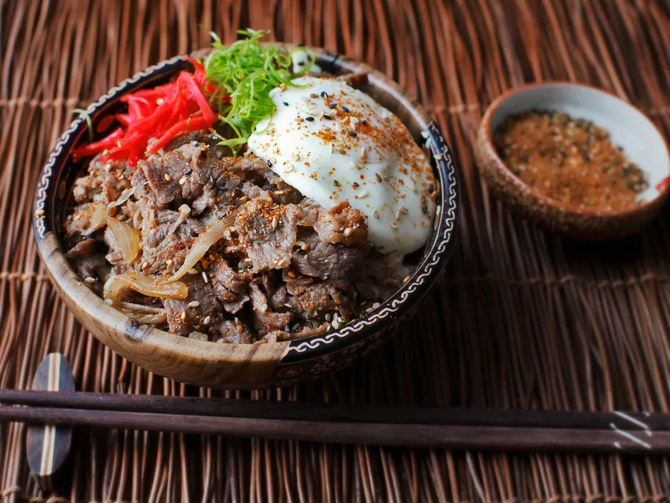

Gyudon (Japanese Beef Rice Bowl)

Description
Ingredients
- 1 small onion, slivered
- 1/2 cup homemade dashi
- 1/4 cup dry sake
- 2 tablespoons soy sauce
- 1 tablespoon sugar, plus more to taste
- 1/2 pound thinly shaved beef ribeye or chuck steak
- 1 teaspoon grated fresh ginger
- Salt
- 2 cups cooked white rice
- 2 large poached eggs (optional)
- Sliced scallions
- Togarashi
Directions
- Combine onion, dashi, sake, soy sauce, and sugar in a medium saucepan or saucier and bring to a simmer over
medium heat. Cook, stirring occasionally, until onion is softened, about 5 minutes.
- Add beef and cook, stirring until beef is cooked through and liquid has reduced down to an intensely flavored broth,
about 5 minutes. Stir in ginger and simmer for 1 minute longer. Adjust seasoning with salt and sugar to taste.
- Divide rice between 2 to 3 bowls and top with beef and sauce mixture. Garnish each bowl with a poached egg (if using),
sliced scallions, beni-shoga, and togarashi. Serve immediately.
Back to recipes.